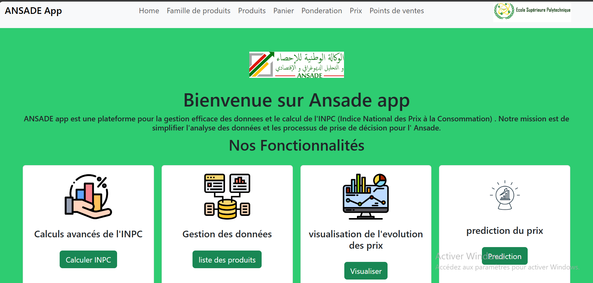

Projects
Data Science Projects
L'impact de la culture et des activités militaires sur la performance académique des étudiants du Groupe Polytechnique à Nouakchott
Cette étude examine l'impact de la culture et les activités militaires sur la performance académique au sein du Groupe Polytechnique à Nouakchott. En se concentrant sur la participation aux activités militaires, les conditions de vie, et d'autres aspects, nous avons recueilli des données auprès de 150 étudiants via un questionnaire et on a realisee notre travail de Data Science jusqu'a l'implementation du modele de regression logistique.
Technologies used: Google Forms , jupyter Notebook, pandas, matplotlib, seaborn, scikit-learn.
Analyse des Facteurs de Risque de la Santé Maternelle dans un contexte Mauritanien
L'objectif de cette analyse est de comprendre comment la consommation de tabac pendant la grossesse peut être un facteur de risque pour la santé maternelle. Nous examinerons des variables telles que la fréquence de la consommation de cigarettes, le nombre de cigarettes fumées en 24 heures, et d'autres indicateurs liés au tabagisme. L'accent sera mis sur l'évaluation de l'impact de ces facteurs sur la santé maternelle, y compris les résultats des naissances. on utilise une base de donnees mauritanienne et un modele de regression logistique .
Technologies used: STATA, jupyter notebook, Pandas, Matplotlib, seaborn,scikit-learn
RessourcesProjet Conversion rate
Les principaux objectifs de cette analyse sont les suivants : Developper des modeles de prediction du taux de conversion pour ameliorer la comprehension des facteurs qui influent sur la conversion des utilisateurs. 2 Fournir des recommandations a l equipe Produit & Marketing afin d ameliorer le taux de conversion et d augmenter les revenus de l entreprise. Nous avons utilisee Random Forest Classifier,Regression Logistique ,Gradient Boosting ,KNN Model
Technologies used: jupyter Notebook, pandas, matplotlib, seaborn, scikit-learn.
AI & Dev Projects
Classification et Reconnaissance des Notes de Musique Traditionnelle Mauritanienne
Notre objectif principal est de developper un mod`ele de deep learning base sur un LSTM capable de recevoir des enregistrements audio de musique traditionnelle mauritanienne contenant des notes de tidinit, et de les classifier avec precision en fonction de leur maqam. En fournissant un outil automatise pour analyser la musique basee sur les maqamat, nous visons a faciliter la comprehension et letude de ce patrimoine musical riche et complexe. Definition d un Maqam: Un maqam est un mode musical utilise pour structurer et organiser les melodies dans la musique traditionnelle mauritanienne. Chaque maqam a ses propres caract eristiques et est utilise pour evoquer des emotions specifiques. les Maqamat d AZAWAN: Karr Vaghou Lkhall. Lbyad Lebteyt
Technologies used:jupyter notebook,pandas, librosa, tensorflow, seaborn .
Ansade App
ANSADE app est une plateforme pour la gestion efficace des donnees et le calcul de l'INPC (Indice National des Prix à la Consommation) . Notre mission est de simplifier l'analyse des données et les processus de prise de décision pour l' Ansade. Nos Fonctionnalités Calculs avancés de l'INPC Gestion des données visualisation de l'evolution des prix prediction du prix
Technologies used: Django, HTML ,CSS, Scikit-learn, pandas
agri_app
Aggrinnovators, plateforme visant a fournir aux agriculteurs des outils et des solutions numériques pour les aider à maximiser leur productivité, et optimiser leurs pratiques agricoles. nos fonctionnalites sont deploiement des modeles dans le site et integration des visualisation et un chatbot
Technologies used:Django,HTML,CSS,AI,DL,ML.
Curriculum vitae
Education
Statistician Engineer / Data Engineer Diploma
École Supérieure polytechnique(ESP)
from 2022 - Now Noaukchott, Mauritania
Two Years Of Intensive Math And Physics Courses
Preparatory Classes for Engineering great schools (IPGEI)
from 2020 - 2022 Noaukchott, Mauritania
High School Diploma
Elkhiyar High School,
2020 Noaukchott, Mauritania
Professional Experience
National Agency for Statistics, Demographic and Economic Analysis (ANSADE)
July 2023 - August 2023
- intern
- Forecasting on National Price Index
ESP DATA CLUB
October 2023 - Now
- Events coordinator
Technical Skills
Programming Languages
R, Python, SQL, Stata, MongoDB, HTML, CSS
Tools and Frameworks
CsPro, Jupyter, Visual Studio, MS Office, Workbench, Google Collab, Gams, Spark, Kafka